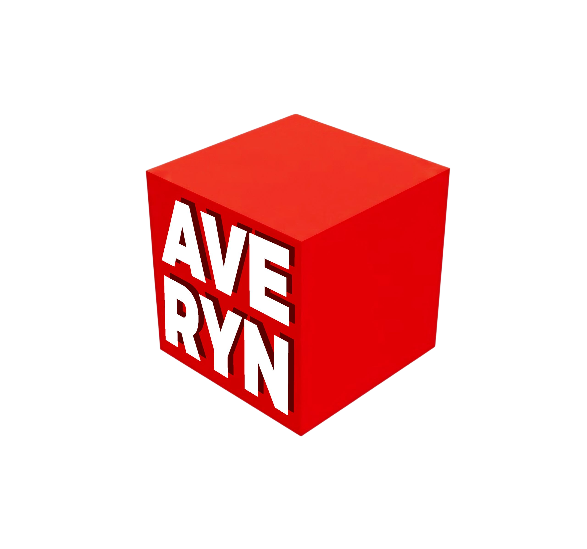

44
Page introuvable
Cette page n'existe pas, ou plus. Si tu as cliqué sur un lien, il est sûrement périmé. Sinon, vérifie l'adresse.

Page introuvable
Cette page n'existe pas, ou plus. Si tu as cliqué sur un lien, il est sûrement périmé. Sinon, vérifie l'adresse.